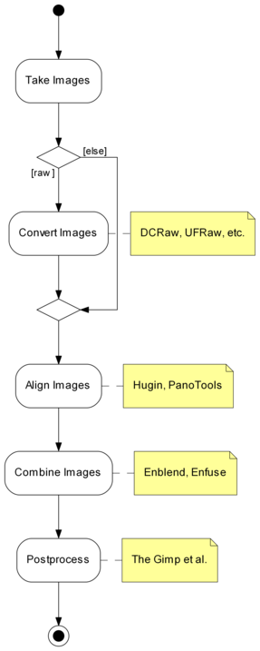
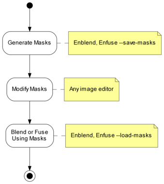
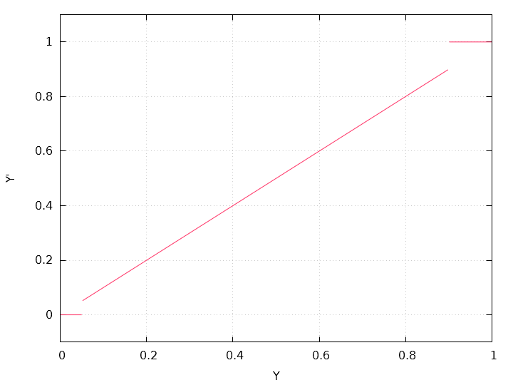
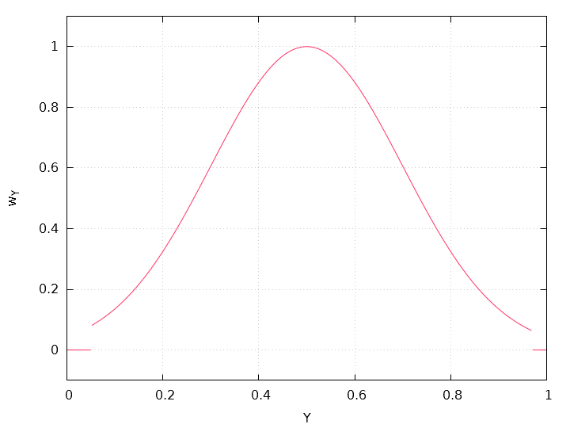
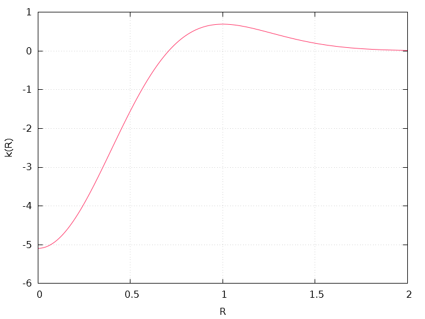
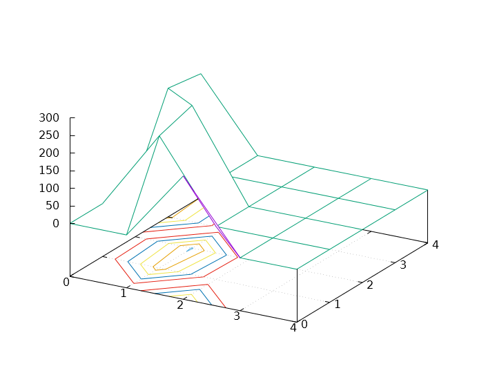
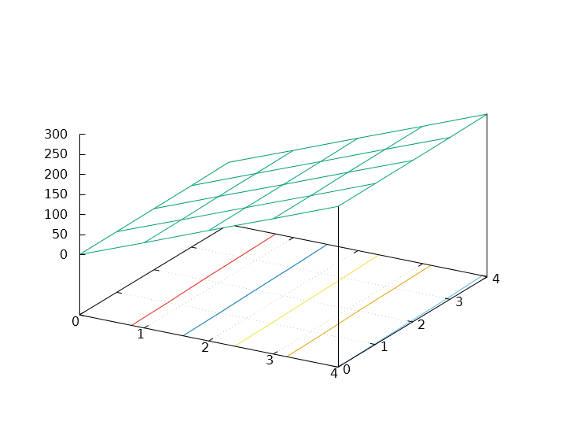

Combining Multiple Images |
This manual is for Enfuse version ⟨4.2⟩, a tool to merge different exposures of the same scene to produce an image that looks much like a tone-mapped image.
Permission is granted to copy, distribute and/or modify this document under the terms of the GNU Free Documentation License, Version 1.2 or any later version published by the Free Software Foundation; with no Invariant Sections, no Front-Cover Texts and no Back-Cover Texts. A copy of the license is included in the section entitled “GNU Free Documentation License”.
Chapters or sections marked with a “c”-sign appear in both manuals, i.e. the Enfuse manual and the Enblend manual. The commonality extends to all sub-sections of the marked one.
This manual uses some typographic conventions to clarify the subject. The markup of the ready-to-print version differs from the web markup.
| Category | Description | Examples |
| Acronym | Common acronym | sRGB, OpenMP |
| Application | GUI or CLI application | Hugin, Enfuse |
| Command | Name of a binary in the running text | convert, enfuse |
| Common part | Chapter, section, or any other part that appears in both manuals | Response Filesc |
| Default | Value as compiled into the enfuse binary that belongs to this documentation | ⟨1⟩, ⟨a.tif⟩ |
| Environment variable | Variable passed to enfuse by the operating system | PATH, TMPDIR |
| Filename | Name of a file in the filesystem | a.tif |
| Filename extension | Name of a filename extension with or without dots | .png, tiff |
| Fix me! | Section that needs extending or at least some improvement | FIXExplainME |
| Literal text | Text that (only) makes sense when typed in exactly as shown | uint16 |
| Option | Command-line option given to enfuse | --verbose |
| Optional part | Optional part of a syntax description in square brackets | --verbose [=LEVEL] |
| Placehoder | Meta-syntactic variable that stands in for the actual text | ICC-PROFILE |
| Proper name | Name of a person or algorithm | Dijkstra |
| Restricted note | Annotation that applies only to a particular program, configuration, or operating system | Enfuse. |
| Sample | Literal text in quotes | ‘%’ or ‘--help’ |
| Side note | Non-essential or “geeky” material | Gory details |
| White space | Indispensable white space | r␣g␣b |
Enfuse merges overlapping images using the Mertens-KautzVan Reeth exposure fusion algorithm.1 This is a quick way for example to blend differently exposed images into a nice output image, without producing intermediate high-dynamic range (HDR) images that are then tone-mapped to a viewable image. This simplified process often works much better than tone-mapping algorithms.
Enfuse can also be used to build extended depth-of-field (DoF) images by blending a focus stack.
The idea is that pixels in the input images are weighted according to qualities such as, for example, proper exposure, good local contrast, or high saturation. These weights determine how much a given pixel will contribute to the final image.
A Burt-Adelson multi-resolution spline blender2 is used to combine the images according to the weights. The multi-resolution blending ensures that transitions between regions where different images contribute are difficult to spot.
Enfuse uses up to four criteria to judge the quality of a pixel:
See Table 5.1 for the default weights of these criteria.
For the concept of pixel weighting, and details on the different weighting functions, see Chapter 5.
Adjust how much importance is given to each criterion by setting the weight parameters on the command line. For example, if you set
Enfuse will favor well-exposed pixels over highly-saturated pixels when blending the source images. The effect of these parameters on the final result will not always be clear in advance. The quality of the result is subject to your artistic interpretation. Playing with the weights may or may not give a more pleasing result. The authors encourage the users to experiment, perhaps using down-sized or cropped images for speed.
Down-sizing (also called “down-sampling”) with a good interpolator reduces noise, which might not be desired to judge the image quality of the original-size image. Cropping can offer an alternative, though.
Enfuse expects but does not require each input image to have an alpha channel. By setting the alpha values of pixels to zero, users can manually remove those pixels from consideration when blending. If an input image lacks an alpha channel, Enfuse will issue a warning and continue assuming all pixels should contribute to the final output. Any alpha value other than zero is interpreted as “this pixel should contribute to the final image”.
The input images are processed in the order they appear on the command line. Multi-layer images are processed from the first layer to the last before Enfuse considers the next image on the command line. Consult Section 4.5 on how to change the images’ order within multi-layer image files.
Find out more about Enfuse on its SourceForge web page.
Enfuse has its limitations. Some of them are inherent to the programs proper others are “imported” by using libraries as for example VIGRA. Here are some of the known ones.
Enfuse and Enblend are parts of a chain of tools to assemble images.
Figure 3.1 shows where Enfuse and Enblend sit in the tool chain of the standard workflow.

There is one exception with Enfuse when a single raw image is converted multiple times to get several – typically differently “exposed” – images.
Exemplary Benefits:
Remaining Problem: The “overlayed” images may not fit together, that is the overlay regions may not match exactly.
Again there is one exception and this is when images naturally align. For example, a series of images taken from a rock solid tripod with a cable release without touching the camera, or images taken with a shift lens, can align without further user intervention.
This step submits the images to affine transformations.
If necessary, it rectifies the lens’ distortions (e.g. barrel or pincushion), too.
Sometimes even luminance or color differences between pairs of overlaying images are corrected (“photometric alignment”).
Benefit: The overlay areas of images match as closely as possible given the quality if the input images and the lens model used in the transformation.
Remaining Problem: The images may still not align perfectly, for example, because of parallax errors, or blur produced by camera shake.
Benefit: The overlay areas become imperceptible for all but the most misaligned images.
Remaining Problem: Enblend and Enfuse write images with an alpha channel; for more information on alpha channels see Chapter 7. Furthermore, the final image rarely is rectangular.
In the usual workflow Enfuse and Enblend generate the blending and fusing masks according to the command-line options and the input images including their associated alpha-channels, and then they immediately use these masks for multi-resolution blending or multi-resolution fusing the output image.
Sometimes more control over the masks is wanted. To this end, both applications provide the option pair --load-masks and --save-masks. See Chapter 4, for detailed explanations of both options. With the help of these options the processing can be broken up into two phases:
Avoid option --output here unless the blended or fused image at this point is wanted.
Neither application (re-)generates any mask in this phase. The loaded masks completely control the multi-resolution blending or multi-resolution fusing the output image.
In between these two steps the user may apply whatever transformation to the mask files, as long as their geometries and offsets remain the same. Thus the “Combine Images” box of Figure 3.1 becomes three activities as is depicted in Figure 3.2.

Figure 3.2: Workflow for externally modified masks. The “Blend or Fuse Using Masks” step utilizes the multi-resolution algorithm just as for internal workflow without mask files.
To further optimize this kind of workflow, both Enfuse and Enblend stop after mask generation if option --save-masks is given, but no output file is specified with the --output option. This way the time for pyramid generation, blending, fusing, and writing the final image to disk is saved, as well as no output image gets generated.
Note that options --save-masks and --load-masks cannot be used simultaneously.
This section explains how to find out about the inner workings of your version of Enfuse without looking at the source code. And it states how to interact with Enfuse besides passing command-line options and image filenames.
An enfuse binary can come in several configurations. The exact name of the binary may vary and it may or may not reflect the “kind of enfuse”. Therefore, enfuse offers several options that allow the user to query exactly…
The information are explained in detail in the following sections.
Example 3.3.1 shows a possible output of ‘enfuse --version’. The version number at the beginning of the text tells about the exact version of the binary. It is the number that can be compared with the version number of this document, which by the way is ⟨4.2⟩. Our slightly cranky markup (see also Notation) dispels copy-paste errors.
$ enfuse --version
enfuse 4.2-02c1f45857b4
Copyright (C) 2004-2009 Andrew Mihal.
Copyright (C) 2009-2015 Christoph Spiel.
License GPLv2+: GNU GPL version 2 or later <http://www.gnu.org/licenses/gpl.html>
This is free software: you are free to change and redistribute it.
There is NO WARRANTY, to the extent permitted by law.
Written by Andrew Mihal, Christoph Spiel and others.
The version indicator consist of a two (major and minor version) or three (major and minor version plus patch-level) numbers separated by dots and an optional hexadecimal identifier. Binaries from the “Development Branch” are assigned two-part version numbers, whereas a three-part version number is reserved for the “Stable Branch” of development. Officially released versions lack the hexadecimal identifier.
Examples:
Matching the version codes is the only reliably way to pair a given binary with its manual page (“manual page for enblend 4.2-1e4d237daabf”) and its documentation. This document mentions the version code for example on its Title and the Abstract.
The twelve-digit hexadecimal ID-CODE is automatically generated by our source-code versioning system, Mercurial. Use the ID-CODE to look up the version on the web in our public source code repository or, if you have cloned the project to your own workspace, with the command
Adding option --verbose to --version will reproduce the information described in the previous section plus a list of “extra features”. Any unavailable feature in the particular binary queried returns
whereas available features answer “yes” followed by a detailed report on the feature and its connection to some library or specific hardware. Example 3.3.2 shows such a report. Remember that your binary may include more or less of the features displayed there.
$ enfuse --version --verbose
enfuse 4.2-95f1fed2bf2d
Extra feature: dynamic linking support: yes
Extra feature: image cache: no
Extra feature: OpenMP: no
Copyright (C) 2004-2009 Andrew Mihal.
Copyright (C) 2009-2015 Christoph Spiel.
License GPLv2+: GNU GPL version 2 or later <http://www.gnu.org/licenses/gpl.html>
This is free software: you are free to change and redistribute it.
There is NO WARRANTY, to the extent permitted by law.
Written by Andrew Mihal, Christoph Spiel and others.
The ‘--version --verbose’ combo is one of the first things test if enfuse “suddenly” behaves strangely.
Check for extra feature OpenMP.
Check for extra feature OpenCL.
Ensure that neither feature mmap-view nor image-cache has been compiled in.
No, there is no command-line switch for that, but you can use a version with mmap-view feature.
Under extra feature OpenMP look for “support for dynamic adjustment of the number of threads”.
Enfuse can read and write a fixed set of image formats if it was compiled to support them. For example the EXR-format requires special support libraries. Use option --show-image-formats to find out
The only three image formats always supported are
All others are optional. In particular the high-dynamic range (HDR) format OpenEXR only gets compiled if several non-standard libraries are available.
The provided per-channel depths range from just one, namely “8 bits unsigned integral” (uint8) up to seven:
Table 3.1 summarizes the channel bit depths of some prominent image formats.
Channel Bit-Depth Format Mask Profile Integral Floating-Point uint8 uint16 uint32 float double JPEG − • • − − − − PNG • • • • − − − PNM ? − • • • − − [V]TIFF • • • • • • •
Table 3.1: Bit-depths of selected image formats. These are the maximum capabilities of the formats themselves, not Enfuse’s. The “Mask”-column indicates whether the format supports an image mask (alpha-channel), see also Chapter 7. Column “Profile” shows whether the image format allows for ICC-profiles to be included; see also Chapter 6.
During building each enfuse is automatically signed to give the users an extra level of confidence that it was constructed by someone that they can trust to get it right. Access this signature with ‘--show-signature’ and enfuse will print something like
where machine name, person, and date-time depend on the build.
Sometimes enfuse refuses to start or runs into trouble because the libraries supplied to it do not match the ones it was compiled with. Option --show-software-components can be helpful to diagnose the problem in such cases, because it shows the version information of Enfuse’s most important libraries as they have identified themselves during compile-time.
Furthermore the report reveals the compiler used to build enfuse along with the most important compiler extensions like, for example, OpenMP. Example 3.3.3 shows such a report.
$ enfuse --show-software-components
Compiler
g++ 4.9.1
implementing OpenMP standard of 2013-7
implementing Cilk version 2.0
without support of "_Cilk_for" keyword
Libraries
GSL: 1.15
Little CMS: 2.7.0
Vigra: 1.10.0
Example 3.3.3: Output of enfuse when asked to reveal the compiler that was used to build it along with the libraries it was linked against.
Enfuse is meant to read multiple images, “montage” them together, and finally write a single output image. So, any console messages either serve the entertainment desire of the user or indicate problems.
When enfuse is instructed to only show information about its configuration (see Section 4.2.6) the text goes to Standard Output. enfuse sends error and warning messages to Standard Error. The messages follow a fixed format.
where CATEGORY is
Most messages drop category name ‘error’ and plainly write MESSAGE:
If an ‘error’ actually leads to a premature termination of enfuse, it returns code 1 to the operating system. On successful termination the return code is 0.
Sadly, not all messages can be sorted in the category scheme.
and LibTIFF:
If the installation of enfuse is correct, this type of message may warrant a bug report as explained in Appendix B.
In very unfortunate circumstances Enfuse quits because of a problem, but does not show any message. The output file then either does not exist or it is broken. One known reason are out-of-memory situations, where the process needs additional memory, but cannot allocate it and while terminating needs even more memory so that the operating system wipes it out completely wherever it then happens to be in its execution path.
A small set of environment variables influences the execution of enfuse. All of them depend on enfuse having been compiled with certain features. The hint “(direct)” indicates genuine variables in enfuse, whereas “(implicit)” denotes variables that control libraries that are linked with enfuse.
The important hot spots in the source code override the value of OMP_DYNAMIC.
Fuse the sequence of images INPUT… into a single IMAGE.
enfuse [OPTIONS] [--output=IMAGE] INPUT…
INPUT images are either specified literally or via so-called response files (see Section 4.4). The latter are an alternative to specifying image filenames on the command line. If omitted, the name of the output IMAGE defaults to ⟨a.tif⟩.
All input images for Enfuse must comply with the following requirements.
See option --depth below for an explanation of different (output) depths.
You can check the supported extensions and formats by calling Enfuse with option --show-image-formats.
Moreover, there are some good practices, which are not enforced by the application, but almost certainly deliver superior results.
In this section we group the options as the command-line help
does and sort them alphabetically within their groups. For an alphabetic list of all options consult the Option Index.
enfuse accepts arguments to any option in uppercase as well as in lowercase letters. For example, ‘deflate’, ‘Deflate’ and ‘DEFLATE’ as arguments to the --compression option described below all instruct enfuse to use the Deflate compression scheme. This manual denotes all arguments in lowercase for consistency.
Common options control some overall features of Enfuse. They are called “common” because they are used most often. However, in fact, Enfuse and Enblend do have these options in common.
Depending on the output file format, Enfuse accepts different values for COMPRESSION.
The number of levels used in a pyramid controls the balance between local and global image features (contrast, saturation, …) in the blended region. Fewer levels emphasize local features and suppress global ones. The more levels a pyramid has, the more global features will be taken into account.
As a guideline, remember that each new level works on a linear scale twice as large as the previous one. So, the zeroth layer, the original image, obviously defines the image at single-pixel scale, the first level works at two-pixel scale, and generally, the nth level contains image data at 2n-pixel scale. This is the reason why an image of width × height pixels cannot be deconstructed into a pyramid of more than
⌊ log2(min(width, height)) ⌋ levels. If too few levels are used, “halos” around regions of strong local feature variation can show up. On the other hand, if too many levels are used, the image might contain too much global features. Usually, the latter is not a problem, but is highly desired. This is the reason, why the default is to use as many levels as is possible given the size of the overlap regions. Enfuse may still use a smaller number of levels if the geometry of the overlap region demands.
Positive values of LEVELS limit the maximum number of pyramid levels. Depending on the size and geometry of the overlap regions this may or may not influence any pyramid. Negative values of LEVELS reduce the number of pyramid levels below the maximum no matter what the actual maximum is and thus always influence all pyramids. Use ‘auto’ or ‘automatic’ as LEVELS to restore the automatic calculation of the maximum number of levels.
The valid range of the absolute value of LEVELS is ⟨1⟩ to ⟨29⟩.
Level Messages 0 only warnings and errors 1 reading and writing of images 2 mask generation, pyramid, and blending 3 reading of response files, color conversions 4 image sizes, bounding boxes and intersection sizes 5 Enblend only. detailed information on the optimizer runs 6 estimations of required memory in selected processing steps
The default verbosity level of Enfuse is ⟨1⟩.
Advanced options control e.g. the channel depth, color model, and the cropping of the output image.
Usually, Enfuse chooses defaults depending on the input images:
On the order of fast to slow computation, Enfuse supports the following blend colorspaces.
Enfuse always uses a smart way to change the channel depth to assure highest image quality at the expense of memory, whether requantization is implicit because of the output format or explicit through option --depth.
All DEPTH specifications are valid in lowercase as well as uppercase letters. For integer format, use
For floating-point format, use
If the requested DEPTH is not supported by the output file format, Enfuse warns and chooses the DEPTH that matches best.
The OpenEXR data format is treated as IEEE754 float internally. Externally, on disk, OpenEXR data is represented by “half” precision floating-point numbers.OpenEXR half precision floating-point, 16 bit wide, 10 bit significant;
- Minimum normalized value: 9.3· 10−10
- Epsilon: 2.0· 10−3
- Maximum finite value: 4.3· 109
This option only is useful when the input images are cropped TIFF files, such as those produced by nona.
Note that option -f neither rescales the output image, nor shrinks the canvas size below the minimum size occupied by the union of all input images.
The Gimp before version 2.0 and CinePaint (see Appendix A) exhibit unusual behavior when loading images with unassociated alpha channels. Use option -g to work around this problem. With this flag Enfuse will create the output image with the “associated alpha tag” set, even though the image is really unassociated alpha.
As this option significantly increases memory usage and computation time only use it, if the panorama will be
Otherwise, always avoid this option!
With this option Enfuse treats the set of input images (panorama) of width w and height h as an infinite data structure, where each pixel P(x, y) of the input images represents the set of pixels SP(x, y).
Solid-state physicists will be reminded of the Born-von Kármán boundary condition.
MODE takes the following values:
| SP(x, y) = {P(x + m w, y): m ∈ Z}. |
This is useful for 360∘ horizontal panoramas as it eliminates the left and right borders.
| SP(x, y) = {P(x, y + n h): n ∈ Z}. |
This is useful for 360∘ vertical panoramas as it eliminates the top and bottom borders.
| SP(x, y) = {P(x + m w, y + n h): m, n ∈ Z}. |
In this mode, both left and right borders, as well as top and bottom borders, are eliminated.
Specifying ‘--wrap’ without MODE selects horizontal wrapping.
Fusion options define the proportion to which each input image’s pixel contributes to the output image.
Valid range: ⟨0⟩ ≤ WEIGHT ≤ ⟨1⟩, default: ⟨0.0⟩.
See Section 5.4 and 4.2.4, option --contrast-window-size.
Valid range: ⟨0⟩ ≤ WEIGHT ≤ ⟨1⟩, default: ⟨0.0⟩.
See Section 4.2.4 and 5.5, options --entropy-window-size and --entropy-cutoff.
Valid range: ⟨0⟩ ≤ OPTIMUM ≤ ⟨1⟩, default: ⟨0.5⟩.
Valid range: ⟨0⟩ ≤ WEIGHT ≤ ⟨1⟩, default: ⟨1.0⟩.
See Section 5.2.
Valid range: WIDTH > ⟨0⟩, default: ⟨0.2⟩.
This blending mode avoids averaging of fine details (only) at the expense of increasing the noise. However it considerably improves the sharpness of focus stacks. Blending with hard masks has only proven useful with focus stacks.
See also Section 4.2.3 and options --contrast-weight as well as --contrast-window-size above.
Valid range: ⟨0⟩ ≤ WEIGHT ≤ ⟨1⟩, default: ⟨0.2⟩.
Saturation weighting is only defined for color images; see Section 5.3.
Control inner workings of Enfuse and the reading/writing of weight masks.
Compare option --blend-colorspace and Chapter 6.3 on color profiles.
Enfuse offers the following algorithms:
This algorithm is useful to temporarily exclude some images in response files.
The masks must be grayscale images. All image formats understood by Enfuse (see option --show-image-formats) are viable mask file formats, though those with floating-point pixels for example TIFF or VIFF are suited best.
1st form: Load all soft-weight masks from files that were previously saved with option --save-masks. HARD-MASK-TEMPLATE is effective only when loading hard masks (see option --hard-mask). The respective defaults are ⟨softmask-%n.tif⟩ and ⟨hardmask-%n.tif⟩.
In the 2nd form SOFT-MASK-TEMPLATE defines the names of the soft-mask files.
In the 3rd form HARD-MASK-TEMPLATE additionally defines the names of the hard-mask files. See option --save-masks below for the description of mask templates.
Options --load-masks and --save-masks are mutually exclusive.
This option has the negated form ‘--no-parameter’, which takes one or more KEYs and removes them from the list of defined parameters. The special key ‘*’ deletes all parameters at once.
Parameters allow the developers to change the internal workings of Enfuse without the need to recompile or relink.
Jack O’Neill: I don’t think we will, first one being a black hole and all. They get progressively darker after that.
1st form: Save all soft-weight masks in files. If option --hard-mask is effective also save the hard masks. The defaults are ⟨softmask-%n.tif⟩ and ⟨hardmask-%n.tif⟩.
In the 2nd form SOFT-MASK-TEMPLATE defines the names of the soft-mask files.
In the 3rd form HARD-MASK-TEMPLATE additionally defines the names of the hard-mask files.
Enfuse will stop after saving all masks unless option --output is given, too. With both options given, this is, ‘--save-masks’ and ‘--output’, Enfuse saves all masks and then proceeds to fuse the output image.
Both SOFT-MASK-TEMPLATE and HARD-MASK-TEMPLATE define templates that are expanded for each mask file. In a template a percent sign (‘%’) introduces a variable part. All other characters are copied literally. Lowercase letters refer to the name of the respective input file, whereas uppercase ones refer to the name of the output file. Table 4.2 lists all variables.
A fancy mask filename template could look like
It puts the mask files into the same directory as the output file (‘%D’), generates a two-digit index (‘%02n’) to keep the mask files nicely sorted, and decorates the mask filename with the name of the associated input file (‘%f’) for easy recognition.
The masks carry the totaled images’ weights. They consist of single-channel, this is grayscale, floating-point data and thus preferably are saved in floating-point form. Enfuse defaults to floating-point TIFF.
Options --load-masks and --save-masks are mutually exclusive.
Table 4.2: Special format characters to control the generation of mask filenames. Uppercase letters refer to the output filename and lowercase ones to the input files.
Expert fusion options control details of contrast-weight algorithms and they set ultimate cutoffs for entropy and exposure fusion.
A positive LCE-SCALE turns on local contrast enhancement (LCE) before the LoG edge detection. LCE-SCALE is the radius of the Gaussian used in the enhancement step, LCE-FACTOR is the weight factor (“strength”). Enfuse calculates the enhanced values of the original ones with
LCE-SCALE defaults to ⟨0.0⟩ pixels and LCE-FACTOR defaults to ⟨0.0⟩. Append ‘%’ to LCE-SCALE to specify the radius as a percentage of EDGE-SCALE. Append ‘%’ to LCE-FACTOR to specify the weight as a percentage.
A positive value makes Enfuse use the local contrast data (controlled with option --contrast-window-size) for curvatures less than CURVATURE and LoG data for values above it.
A negative value truncates all curvatures less than −CURVATURE to zero. Values above CURVATURE are left unchanged. This effectively suppresses weak edges.
For contrast analysis SIZE values larger than 5 pixels might result in a blurry composite image. Values of 3 and 5 pixels have given good results on focus stacks.
Valid range: SIZE ≥ ⟨3⟩, default: ⟨5⟩ pixels.
See also Section 4.2.3, options --contrast-weight and --hard-mask.
| Y′ = | ⎧ ⎪ ⎨ ⎪ ⎩ |
| (4.1) |
Also see Section 5.5 for an explanation of local entropy. Figure 4.1 shows an example for the luminance mapping.
Note that the entropy cutoff does not apply directly to the local-entropy H of a pixel or its weight wH, but the luminance image that get fed into the local-entropy weight calculation. However, assigning constant values to extreme shadows or highlights in general decreases their local entropy, thereby reducing the pixels’ weights.
For color images LOWER-CUTOFF and UPPER-CUTOFF are applied separately and independently to each channel.
Append a ‘%’-sign to specify the cutoff relative to maximum pixel value in the source image (for example 255 or 65535). Negative UPPER-CUTOFF values indicate the maximum minus the absolute UPPER-CUTOFF value; the same holds for negative percentages.
Defaults: ⟨0%⟩ for LOWER-CUTOFF and ⟨100%⟩ for UPPER-CUTOFF, that is, all pixels’ values are taken into account.

Figure 4.1: Modified lightness Y′, Eqn. 4.1, for LOWER-CUTOFF = 5% and UPPER-CUTOFF = 90%, which are rather extreme values.
Note that a high LOWER-CUTOFF value lightens the resulting image, as dark and presumably noisy pixels are averaged with equal weights. With LOWER-CUTOFF = 0, the default, on the other hand, “noise” might be interpreted as high entropy and the noisy pixels get a high weight, which in turn renders the resulting image darker. Analogously, a low UPPER-CUTOFF darkens the output image.
In the entropy calculation SIZE values of 3 to 7 yield an acceptable compromise of the locality of the information and the significance of the local entropy value itself.
Valid range: SIZE ≥ ⟨3⟩, default: ⟨3⟩ pixels.
If given an even SIZE Enfuse will automatically use the next-larger odd number.
For color images the values of LOWER-CUTOFF and UPPER-CUTOFF refer to the gray-scale projection as selected with LOWER-PROJECTOR and UPPER-PROJECTOR. This is similar to option --gray-projector.
Append a ‘%’-sign to specify the cutoff relative to maximum pixel value in the source image (for example 255 or 65535). Negative UPPER-CUTOFF values indicate the maximum minus the absolute UPPER-CUTOFF value; the same holds for negative percentages.
The impact of this option is similar, but not identical to transforming all input images with ImageMagick’s convert (see Appendix A) prior to fusing with the commands demonstrated in Example 4.2.4.$ convert IMAGE \
\( +clone -threshold LOWER-CUTOFF \) \
-compose copy_opacity -composite \
MASKED-IMAGE
$ convert IMAGE \
\( \
\( IMAGE -threshold LOWER-CUTOFF \) \
\( IMAGE -threshold UPPER-CUTOFF -negate \) \
-compose multiply -composite \
\) \
-compose copy_opacity -composite \
MASKED-IMAGE
Example 4.2.4: Using ImageMagick for exposure cutoff operations. The first example only applies a lower cutoff, whereas the second one applies both a lower and an upper cutoff to the images. Transforming some or all input images as shown in the example gives the user more flexibility because the thresholds can be chosen for each image individually.
The option allows to specify projection operators as in option --gray-projector for the LOWER-CUTOFF and UPPER-CUTOFF thresholds.
This option can be helpful if the user wants to exclude underexposed or overexposed pixels from the fusing process in all of the input images. The values of LOWER-CUTOFF and UPPER-CUTOFF as well as the gray-scale projector determine which pixels are considered “underexposed” or “overexposed”. As any change of the exposure-weight curve this option changes the brightness of the resulting image: increasing LOWER-CUTOFF lightens the final image and lowering UPPER-CUTOFF darkens it.
Defaults: ⟨0%⟩ for LOWER-CUTOFF and ⟨100%⟩ for UPPER-CUTOFF, that is, all pixels’ values are weighted according to the “uncut” exposure-weight curve.
Figure 4.2 shows an example.
The gray-scale projectors LOWER-PROJECTOR and UPPER-PROJECTOR default to ‘⟨anti-value⟩’ and ‘⟨value⟩’, which are usually the best choices for effective cutoff operations on the respective ends.

Figure 4.2: Exposure weight wY after an exposure-cutoff of LOWER-CUTOFF = 5% and UPPER-CUTOFF = 97% was applied to a Gaussian with the optimum = 0.5 and width = 0.2.
Note that the application of the respective cutoffs is completely independent of the actual shape of the exposure weight function.
If a set of images stubbornly refuses to “react” to this option, look at their histograms to verify the cutoff actually falls into populated ranges of the histograms. In the absence of an image manipulation program like The Gimp, ImageMagick’s can be used to generate histograms, like, for example,
The syntax of this option is flexible enough to combine ease of use and precision, as Table 4.3 demonstrates.
Task Cutoff Setting Effect Suppress some noise. --exposure-cutoff=5% The percentage makes the cutoff specification channel-width agnostic. Shave off pure white pixels. --exposure-cutoff=0:-1 This cutoff specification only works for integral pixels, but it will set the weight of the very brightest pixels to zero. Shave off bright white pixels. --exposure-cutoff=0:-1% Here we exclude the brightest 1% of pixels form the exposure fusion no matter whether the image is encoded with integers or floating-point numbers. Suppress some noise and shave off pure white pixels. --exposure-cutoff=5%:-1 Combine the effects of lower and upper cutoff, while mixing relative and absolute specifications.
2nd form: dynamically load SHARED-OBJECT and use SYMBOL as user-defined exposure weight function. Optionally pass the user-defined function ARGUMENTs.Depending on the operating system environment, a “shared object” is sometimes also called a “dynamic library”.
In Table 4.4 the variable wexp denotes the exposure weight and z represents the normalized luminance Y linearly transformed by the exposure optimum Yopt (option --exposure-optimum) and width (option --exposure-width) according to the linear transform
| z = |
| . (4.2) |
Internally Enfuse uses a rescaled width that gives all weight functions the same full width at half of the maximum (FWHM), also see Figure 5.6. This means for the user that changing the exposure function neither changes the optimum exposure nor the width.
- gauss
gaussian- The original exposure weight function of Enfuse and the only one up to version 4.1.
wexp = exp ⎛
⎝−z2 / 2 ⎞
⎠(4.3) - lorentz
lorentzian- Lorentz curve.
wexp =
1 1 + z2 / 2 (4.4) - halfsine
half-sine- Upper half-wave of a sine; exactly zero outside.
wexp = ⎧
⎨
⎩
cos(z) if |z| ≤ π/2 0 otherwise. (4.5) - fullsine
full-sine- Full sine-wave shifted upwards by one to give all positive weights; exactly zero outside.
wexp = ⎧
⎨
⎩
(1 + cos(z)) / 2 if |z| ≤ π 0 otherwise. (4.6) - bisquare
bi-square- Quartic function.
wexp = ⎧
⎨
⎩
1 − z4 if |z| ≤ 1 0 otherwise. (4.7)
Table 4.4: Predefined exposure weight functions. For a graphical comparison see Figure 5.6.
For a detailed explanation of all the weight functions Section 5.2.
If this option is given more than once, the last instance wins.
| (R, G, B) → Y. |
In this version of Enfuse, the option is effective for exposure weighting and local contrast weighting and PROJECTOR defaults to ‘⟨average⟩’.
Valid values for PROJECTOR are:
| Y = min(R, G, B) |
| Y = |
|
|
The weights are automatically normalized to one, so
all define the same mixer configuration.
The three weights RED-WEIGHT, GREEN-WEIGHT, and BLUE-WEIGHT define the relative weight of the respective color channel. The sum of all weights is normalized to one.
See Wikipedia for a detailed description of the Lab color space.
| Y = |
|
| Y = 0.30 × R + 0.59 × G + 0.11 × B |
See Wikipedia for a detailed description of the Lab color space.
| Y = max(R, G, B) |
Depending on the build-time configuration and the operating system the binary may support different globbing algorithms. See Section 4.4.3.
Depending on the build-time configuration and the operating system, the binary supports different image formats, typically: BMP, EXR, GIF, HDR, JPEG, PNG, PNM, SUN, TIFF, and VIFF and recognizes different image-filename extensions, again typically: bmp, exr, gif, hdr, jpeg, jpg, pbm, pgm, png, pnm, ppm, ras, tif, tiff, and xv.
The maximum number of different per-channel depths any enfuse provides is seven:
This information can be helpful to ensure the binary was created by a trustworthy builder.
Technically, the version information is taken from header files, thus it is independent of the dynamic-library environment the binary runs within. The library versions printed here can help to reveal version mismatches with respect to the actual dynamic libraries available to the binary.
Team this option with --verbose to show configuration details, like the extra features that may have been compiled in. For details consult Section 3.3.1.
Enfuse and Enblend allow the arguments supplied to the programs’ options to be separated by different separators. The online documentation and this manual, however, exclusively use the colon ‘:’ in every syntax definition and in all examples.
Valid delimiters are the semicolon ‘;’, the colon ‘:’, and the slash ‘/’. All delimiters may be mixed within any option that takes numeric arguments.
Examples using some Enfuse options:
Here, the accepted delimiters are comma ‘,’, semicolon ‘;’, and colon ‘:’. Again, all delimiters may be mixed within any option that has filename arguments.
Examples:
A response file contains names of images or other response filenames. Introduce response file names at the command line or in a response file with an ⟨@⟩ character.
Enfuse and Enblend process the list INPUT strictly from left to right, expanding response files in depth-first order. Multi-layer files are processed from first layer to the last. The following examples only show Enblend, but Enfuse works exactly the same.
The ultimate order in which the images are processed is: image-1.tif, image-2.tif, image-3.tif.
where file list contains
Ultimate order: img1.exr, img2.exr, img3.exr, img4.exr.
where file master.list comprises of
first.list is
and second.list contains
Ultimate order: image-01.png, image-02.png, image-03.png, image-04.png, image-05.png, image-06.png, image-07.png, image-08.png, image-09.png, image-10.png,
Response files contain one filename per line. Blank lines or lines beginning with a ⟨#⟩ sign are ignored; the latter can serve as comments. Filenames that begin with a ⟨@⟩ character denote other response files. Table 4.5 states a formal grammar of response files in EBNF.
response-file ::= line* line ::= (comment | file-spec) [‘\r’] ‘\n’ comment ::= space* ‘#’ text file-spec ::= space* ‘@ ’ filename space* space ::= ‘␣’ | ‘\t’ where text is an arbitrary string and filename is any filename.
In a response file relative filenames are used relative the response file itself, not relative to the current-working directory of the application.
The above grammar might surprise the user in the some ways.
only the first line contains a comment, whereas the second line includes none. Rather, it refers to a file called
If Enfuse or Enblend do not recognize a response file, they will skip the file and issue a warning. To force a file being recognized as a response file add one of the following syntactic comments to the first line of the file.
Finally, Example 4.4.5 shows a complete response file.
# These pictures were taken with the panorama head.
@ round-shots.list
# Freehand sky shot.
zenith.tif
# "Legs, will you go away?" images.
nadir-2.tif
nadir-5.tif
nadir.tif
Comments that follow the format described in Table 4.6 are treated as instructions how to interpret the rest of the response file. A syntactic comment is effective immediately and its effect persists to the end of the response file, unless another syntactic comment undoes it.
syntactic-comment ::= space* ‘#’ space* key space* ‘:’ space* value key ::= (‘A’…‘Z’ | ‘a’…‘z’ | ‘-’)+ where value is an arbitrary string.
Unknown syntactic comments are silently ignored.
A special index for syntactic comments lists them in alphabetic order.
The three equivalent syntactic keys
control the algorithm that Enfuse or Enblend use to glob filenames in response files.
All versions of Enfuse and Enblend support at least two algorithms: literal, which is the default, and wildcard. See Table 4.7 for a list of all possible globbing algorithms. To find out about the algorithms in your version of Enfuse or Enblend use option --show-globbing-algorithms.
- literal
- Do not glob. Interpret all filenames in response files as literals. This is the default.
Please remember that white-space at both ends of a line in a response file always gets discarded.
- wildcard
- Glob using the wildcard characters ‘?’, ‘*’, ‘[’, and ‘]’.
The Win32 implementation only globs the filename part of a path, whereas all other implementations perform wildcard expansion in all path components. Also see glob(7).
- none
- Alias for literal.
- shell
- The shell globbing algorithm works as literal does. In addition, it interprets the wildcard characters ‘{’, ‘@’, and ‘~’. This makes the expansion process behave more like common UN*X shells.
- sh
- Alias for shell.
Example 4.4.6 gives an example of how to control filename-globbing in a response file.
# 15 images
# filename-globbing: wildcard
image_000[0-9].tif
image_001[0-4].tif
The key layer-selector provides the same functionality as does the command-line option --layer-selector, but on a per response-file basis. See Section 4.2.1.
This syntactic comment affects the layer selection of all images listed after it including those in included response files until another layer-selector overrides it.
Some image formats, like for example TIFF, allow for storing more than one image in a single file, where all the contained images can have different sizes, number of channels, resolutions, compression schemes, etc. The file there acts as a container for an ordered set of images.
In the TIFF-documentation these are known as “multi-page” files and because the image data in a TIFF-file is associated with a “directory”, the files sometimes are also called “multi-directory” files. In this manual, multiple images in a file are called “layers”.
The main advantage of multi-layer files over a set of single-layer ones is a cleaner work area with less image-files and thus an easier handling of the intermediate products which get created when generating a panorama or fused image, and in particularly with regard to panoramas of fused images.
The difficulty in working with layers is their lack of a possibly mnemonic naming scheme. They do not have telling names like taoth-vaclarush or valos-cor, but only numbers.
To give the user the same flexibility in specifying and ordering images as with single-layer images, both Enfuse and Enblend offer a special syntax to select layers in multi-page files by appending a layer-specification to the image file name. Table 4.8 defines the grammar of layer-specifications.
Selecting a tuple of layers with a layer-specification overrides the active layer selection algorithm. See also option --layer-selector and Section 4.4. Layer selection works at the command-line as well as in Response Files; see Section 4.4.
layer-specification ::= ‘[’ selection-tuple ‘]’ selection-tuple ::= selection [ ‘:’ selection ] selection ::= { singleton | range } range ::= [ ‘reverse’ ] [ range-bound ] ‘..’ [ range-bound ] range-bound ::= singleton | ‘_’ singleton ::= index | ‘-’ index where index is an integral layer index starting at one.
The simplest layer-specification are the layer-indexes. The first layer gets index 1, the second layer 2, and so on. Zero never is a valid index! For convenience indexing backwards2 is also possible. This means by prefixing an index with a minus-sign (‘-’) counting will start with the last layer of the associated multi-page image, such that the last layer always has index -1, the next to last index -2 and so on. Out-of-range indexes are silently ignored whether forward or backward.
The single layer of a single-layer file always can be accessed either with index ‘1’ or ‘-1’.
Select a contiguous range of indexes with the range operator ‘⟨..⟩’, where the range-bounds are forward or backward indices. Leaving out a bound or substituting the open-range indicator ‘⟨_⟩’ means a maximal range into the respective direction.
Layer specifications ignore white space, but usual shells do not. This means that at the command-line
works, whereas spaced-out out phrase ‘multi-layer.tif [2 : ]’ must be quoted
Quoting will also be required if Enfuse’s delimiters have special meanings to the shell.
Examples for an image with 8 layers.
Shell expansion will not work anymore with a file name terminated by a layer specification expression (or anything else), because to the shell it is not a file name anymore. Work around with, for example,$ enfuse ‘for x in image-??.tif; do echo $x[2]; done‘or
$ enfuse $(ls -1 image-??.tif | sed -e ’s/$/[2]/’)The order of the indices determines the order of the layers, this is, the images. An index can occur multiple times, which causes layer to be considered again. Consequently, this will lead to an error with Enblend, but may be desired with Enfuse in soft-mask mode to give the image more weight by mentioning it more than once.
Here are some tools that are particularly useful when working with multi-page files. For more helpful utilities check out Appendix A.
Please bear in mind that some image-processing tools – none of the above though – do not handle multi-page files correctly, where the most unfruitful ones only take care of the first layer and silently ignore any further layers.
As has been noted in the introductory Overview, Enfuse supports four different types of weighting. The following sections describe the concept of weighting and all weighting functions in detail.
Image fusion maps each pixel P(i, x, y) of every input image i to a single pixel Q(x, y) in the output image:
| P(i, x, y) → Q(x, y), |
where x runs from 1 to the width of the images, y from 1 to the height, and i from 1 to the number n of input images.
| w(P(1, x, y)) P(1, x, y) + … + w(P(n, x, y)) P(n, x, y) → Q(x, y), (5.1) |
where
The pixel weights w themselves are weighted sums with the same constraints
|
Here we have abbreviated P(i, x, y) to P for simplicity. The user defines the constants wexp, wsat, wcont, and went with the options --exposure-weight, --saturation-weight, --contrast-weight, and --entropy-weight respectively. The functions fexp, fsat, fcont, and fent along with the window sizes rcont and rent are explained in the next sections.
By default, Enfuse uses a weighted average, where each pixel contributes as much as its weight demands. Of course the weights can be extreme, favoring only a few pixels or even only one pixel in the input stack. Extremes are not typical, however.
Equal weights are another extreme that turns (5.1) into an arithmetic average. This is why we sometimes speak of the “averaging property” of this weighting algorithm, like smoothing out noise.
The weighted average computation as described above has proven to be widely successful with the exception of one special case: focus stacking, where the averaging noticeably softens the final image.
Use ‘--hard-mask’ to switch Enfuse into a different weighting mode, where the pixel with the highest weight wins, this is, gets weight one, and all other pixels get the weight of zero. With option --hard-mask (5.1) becomes
| P(i, x, y) → Q(x, y), |
where
| w(P(i, x, y)) ≥ w(P(j, x, y)) for all 1 ≤ j ≤ n. |
Note that this “averaging” scheme lacks the nice noise-reduction property of the weighted average (5.1), because only a single input pixel contributes to the output.
Enfuse allows the user to weight each pixel of an input image by up to four different criteria (see e.g. Chapter 1). However, it does not force the user to do so. For some applications and more often simply to gain further insight into the weighting and fusing process, looking at only a single criterion is the preferred way to work.
The version of Enfuse for which this documentation was prepared, uses the default weights as stated in Table 5.1. Notice that by default more than one weight is larger than zero, which means they are active.
To disable a particular criterion set its weight to zero as for example
instructs Enfuse to consider only the exposure weight. Combine this with option --save-masks and it will become clearer how Enfuse computes the exposure weight for the set of images.
Another problem that can be inspected by fusing with just a single active criterion and saving the masks is if the weights of one criterion completely overpower all others.
Exposure weighting prefers pixels with a luminance Y close to the user-chosen optimum value (option --exposure-optimum, default: ⟨0.5⟩) of the normalized, real-valued luminance interval (0, 1).
RGB-pixels get converted to luminance before using the grayscale projector given by ‘--gray-projector’, which defaults to average. Grayscale pixels simply are identified with luminance.
In the normalized luminance interval 0.0 represents pure black and 1.0 represents pure white independently of the data type of the input image. This is, for a JPEG image the luminance 255 maps to 1.0 in the normalized interval and for a 32 bit TIFF picture the highest luminance value 4294967295 also maps to 1.0. The middle of the luminance interval, 0.5, is where a neutral gray tone ends up with every camera that had no exposure correction dialed in, for example the image of any gray-card or white-card.
The exposure weighting algorithm only looks at a single pixel at a time; the pixel’s neighborhood is not taken into account.
Up to Enfuse version 4.1 the only weighting function is the Gaussian
| wexp(Y) = exp | ⎛ ⎜ ⎜ ⎜ ⎜ ⎜ ⎝ | − |
| ⎛ ⎜ ⎜ ⎝ |
| ⎞ ⎟ ⎟ ⎠ |
| ⎞ ⎟ ⎟ ⎟ ⎟ ⎟ ⎠ | , (4.3 rep.) |
whose maximum position Yopt and width are controlled by the command line options --exposure-optimum and --exposure-width respectively, where Yopt defaults to ⟨0.5⟩ and width defaults to ⟨0.2⟩. Figure 5.1 shows some Gaussians.
The options --exposure-optimum and --exposure-width serve to fine-tune the final result without changing the set of input images. Option --exposure-optimum sets the point of optimum exposure. Increasing the optimum makes Enfuse prefer lighter pixels, rendering the final image lighter, and vice versa. Option --exposure-width defines the width of acceptable exposures. Small values of width penalize exposures that deviate from optimum more, and vice versa.
In Enfuse version 4.2 several new exposure weight functions have been added. Select them with option --exposure-weight-function. For the following presentation we refer to the linear luminance transform
| z = |
| . (4.2 rep.) |
as introduced in Eqn. 4.2.
Exposure Weight WEIGHT-FUNC. Equ. Chart Gaussian curve (default) gauss, gaussian 4.3 5.1 Lorentz curve lorentz, lorentzian 4.4 5.2 Upper half-wave of a sine halfsine, half-sine 4.5 5.3 Full sine-wave shifted upwards by one fullsine, full-sine 4.6 5.4 Quartic, or bi-square function bisquare, bi-square 4.7 5.5
Functions Gaussian
| wexp(z) = exp | ⎛ ⎝ | −z2 / 2 | ⎞ ⎠ | (4.3 rep.) |
and Lorentzian
| wexp(z) = |
| (4.4 rep.) |
behave like 1 − z2 around the optimum. However for large |z| the Gaussian weight rolls off like exp(−z2/2) and the Lorentzian only as z−2.
Both, the Gaussian and the Lorentzian are easy to use, because they do not go exactly to zero. Thus, Enfuse can select “better” pixels even far away from the chosen optimum.
Again, Half-Sine
| wexp(z) = | ⎧ ⎨ ⎩ |
| (4.5 rep.) |
and Full-Sine
| wexp(z) = | ⎧ ⎨ ⎩ |
| (4.6 rep.) |
behave like 1 − z2 around the optimum, like Gaussian and Lorentzian. However for large |z| they both are exactly zero. The difference is how they decrease just before they reach zero. Half-Sine behaves like z − z′ and Full-Sine like (z − z″)2, where z′ and z″ are the respective zeros.
Bi-Square
| wexp(z) = | ⎧ ⎨ ⎩ |
| (4.7 rep.) |
is the only predefined function that behaves like 1 − z4 around the optimum.
The weight functions Half-Sine, Full-Sine, and Bi-Square are more difficult to use, because they yield exactly zero if the normalized luminance of a pixel is far enough away from the optimum. This can lead to pathologies if the luminances of the same pixel position in all N input images are assigned a weight of zero. For all-zero weights Enfuse falls back to weighing equally. This is, each pixel gets a weight of 1/N, which may or may not be the desired result. However, if the width is chosen so large that the weight never vanishes or the input images span a large enough range of luminances for each and every pixel, the problem is circumnavigated.
Another way of cutting off underexposed or overexposed pixels is to use option --exposure-cutoff, which has the additional benefit of allowing to choose upper and lower cutoff separately.
Figure 5.6 compares all available exposure weight functions for the same parameters, namely their defaults. They all intersect at w = 1/2 independently of optimum or width, making it simple to just try them out without fundamentally changing brightness.
Dynamic Linking-enabled versions only.
On operating systems, where dynamic linking (or synonymously: dynamic loading) of code is possible, for Enfuse executables compiled with dynamic-linking support (see Section 3.3.1 on how to check this feature), Enfuse can work with user-defined exposure weighting functions, passed with the long form of option --exposure-weight-function, load the exposure weight function identified by SYMBOL from SHARED-OBJECT and optionally pass some ARGUMENTs:
Some notes on the arguments of this option:
If SHARED-OBJECT does not contain a slash (‘/’), the dynamic loader only searches along LD_LIBRARY_PATH; it even ignores the current working directory unless LD_LIBRARY_PATH contains a dot (‘.’). So, to use a SHARED-OBJECT living in the current directory either sayor
enfuse --exposure-weight-function=SHARED-OBJECT:…
For details of the search algorithm please consult the manual page of dlopen(3).
If SHARED-OBJECT does not contain a slash (‘/’), the dynamic loader searches the following paths or directories until it finds a compatible Mach-O file:
- LD_LIBRARY_PATH,
- DYLD_LIBRARY_PATH,
- current working directory, and finally
- DYLD_FALLBACK_LIBRARY_PATH.
For details of the search algorithm please consult the manual page of dlopen(3).
If SHARED-OBJECT specifies an absolute filename, exactly this file is used. Otherwise Enfuse searches in the following directories and in this order:
- The directory from which enfuse is loaded.
- The system directory.
- The Windows directory.
- The current directory.
- The directories that are listed in the PATH environment variable.
Usually, neither the exposure optimum (--exposure-optimum=OPTIMUM) nor the width (--exposure-width=WIDTH) of the exposure function are ARGUMENTs, because they are always explicitly passed on to any exposure weight function.
For example, assuming variable_power.cc of the supplied examples was compiled to variable_power.so, we can override the default exponent of 2 with
To use a home-grown exposure-weight function several prerequisites must be met. On the software side
The latter is called “ABI-compatible”. An example for a pair of ABI-compatible compilers is GNU’s g++ and Intel’s icpc.
To find out which compiler built your version of enfuse use option --show-software-components.
Between chair and keyboard:
Enfuse checks this property and refuses to continue if any weight is outside the required range or all weights are zero.
Enfuse never calls initialize in an OpenMP parallel execution environment. However, OpenMP-enabled versions of Enfuse call normalize and weight in parallel sections.
Technically, the functors which the user-defined weight functions are part of are copy-constructed for each OpenMP worker thread. Thus, there is no contention within the ExposureWeight sub-classes. Although, if normalize or weight access a shared resource these accesses must be protected by serialization instructions. One solution is to use OpenMP directives, like for example,
Experienced hackers will recognize occasions when to prefer other constructs, like, for example #pragma omp atomic or simply an atomic data-type (e.g. sig_atomic_t from signal.h).
Remember to compile all modules that use OpenMP directives with the (compiler-specific) flags that turn on OpenMP. For g++ this is ‘-fopenmp’ and for icpc it is ‘-fopenmp’ or ‘-openmp’.
The actual signature of the constructor (default, two-argument, …) does not matter, because Enfuse always invokes initialize before calling any other method of a user-defined ExposureWeight sub-class. Method initialize sets (read: overwrites) optimum and width and ensures they are within the required parameter range.
Example 5.2.7 shows the C++-code of a suitable extension. If Enfuse has been compiled with support for user-defined weight functions, the examples presented here should have been duplicated in directory doc/examples/enfuse along with a GNU-Makefile called Makefile.userweight.
#include <cmath> // std::fabs() #include "exposure_weight_base.h" // FWHM_GAUSSIAN, ExposureWeight struct Linear : public ExposureWeight { void initialize(double y_optimum, double width_parameter, ExposureWeight::argument_const_iterator arguments_begin, ExposureWeight::argument_const_iterator arguments_end) override { ExposureWeight::initialize(y_optimum, width_parameter * FWHM_GAUSSIAN, arguments_begin, arguments_end); } double weight(double y) override { const double z = std::fabs(normalize(y)); return z <= 1.0 ? 1.0 - z : 0.0; } }; Linear linear;
As the extension language is C++, we can write templated families of functions, like Example 5.2.8 demonstrates.
#include <algorithm> // std::max() #include <cmath> // M_LN2, std::exp(), std::fabs() #include "exposure_weight_base.h" // FWHM_GAUSSIAN, ExposureWeight template <int n> double ipower(double x) {return x * ipower<n - 1>(x);} template <> double ipower<0>(double) {return 1.0;} template <int n> struct TemplatedPower : public ExposureWeight { void initialize(double y_optimum, double width, ExposureWeight::argument_const_iterator arguments_begin, ExposureWeight::argument_const_iterator arguments_end) override { const double fwhm = 2.0 / std::exp(M_LN2 / static_cast<double>(n)); ExposureWeight::initialize(y_optimum, width * FWHM_GAUSSIAN / fwhm, arguments_begin, arguments_end); } double weight(double y) override { return std::max(1.0 - ipower<n>(std::fabs(normalize(y))), 0.0); } }; TemplatedPower<2> tpower2; TemplatedPower<3> tpower3; TemplatedPower<4> tpower4;
The last example, 5.2.9, shows a weight function that accesses an extra ARGUMENT passed in with --exposure-weight-function. A class like VariablePower allows full control over the exponent at the command line including fractional exponents thereby generalizing both of the previous examples.
#include <algorithm> // std::max() #include <cerrno> // errno #include <cmath> // M_LN2, std::exp(), std::fabs(), std::pow() #include "exposure_weight_base.h" // FWHM_GAUSSIAN, ExposureWeight class VariablePower : public ExposureWeight { typedef ExposureWeight super; public: void initialize(double y_optimum, double width, ExposureWeight::argument_const_iterator arguments_begin, ExposureWeight::argument_const_iterator arguments_end) override { if (arguments_begin == arguments_end) { exponent = 2.0; } else { char* tail; errno = 0; exponent = strtod(arguments_begin->c_str(), &tail); if (*tail != 0 || errno != 0) { throw super::error("non-numeric exponent"); } if (exponent <= 0.0 || exponent > 4.0) { throw super::error("exponent x out of range 0 < x <= 4"); } } const double fwhm = 2.0 / std::exp(M_LN2 / exponent); super::initialize(y_optimum, width * FWHM_GAUSSIAN / fwhm, arguments_begin, arguments_end); } double weight(double y) override { return std::max(1.0 - std::pow(std::fabs(normalize(y)), exponent), 0.0); } private: double exponent; }; VariablePower vpower;
Example 5.2.9: Dynamic exposure weight function that accesses the first extra argument from the tuple of arguments passed with option --exposure-weight-function.
Exposure weighting objects are created and destroyed only O(1) times. Thus, method initialize could be used to perform all kinds of computationally expensive tasks. In contrast, methods normalize and weight are called for every pixel in each of the input images. Therefore, if performance of the weight function is a problem, these two functions are the prime candidates for optimization.
Compile and link using the GNU-compiler, g++, for example with
-O2 -fpic -I<PATH-TO-BASE-CLASS-HEADER> \
-shared -Wl,-soname,dynexp.so \
-o dynexp.so \
dynexp.ccThe important options are
- -fpic
- Instruct the compiler’s code-generator to produce position-independent code (PIC), which is suitable for a shared object. Some systems require ‘-fPIC’ instead of ‘-fpic’.
- -shared
- Tell the linker to create a shared object instead of the default executable. On some systems, the library must be “blessed”, by passing the shared-object name (soname) directly to the linker (-Wl).
Of course more than one object file can be linked into a single shared object.
Finally, the weight function can be selected by its SYMBOL name in the SHARED-OBJECT.
On OS X the creation of shared objects – or loadable modules – has been tested with the C-language frontend of LLVM, clang++, and should work on OS X Mavericks (10.9) or higher.
-O2 -bundle -I<PATH-TO-BASE-CLASS-HEADER> \
-o dynexp.so \
dynexp.ccThe important option here is ‘-bundle’ which instructs the compiler’s code-generator to produce a loadable module.
Finally, the weight function can be selected by its SYMBOL name in the SHARED-OBJECT.
On Windows the creation of shared objects – or dynamic link libraries (DLL files) as they are called here – has been tested with the MinGW compiler chain and with MS-Visual C++ 2012.
- Compile and link using the MinGW compiler with
g++ -g -shared -Wl,-soname,dynexp.dll -o dynexp.dll dynexp.oFor details see the explanation for the GNU compiler above. Windows neither requires options -fpic nor -fPIC.
- When using the MS-Visual C++ compiler, you need to explicitly export SYMBOL. There are two possibilities to achieve this. Use only one variant, not both at the same time.
- Either use "C" linkage and define the object using the construction __declspec(dllexport). For Example 5.2.7 the object definition has to be extended to
extern "C" { __declspec(dllexport) Linear linear; }- Or, alternatively, create a module-definition file (.def) and pass this file to the linker (in: Project Properties, Linker, Module Definition File). For Example 5.2.7, this file would look like
EXPORTS
linear @@1
Finally, the weight function can be selected by its SYMBOL in the dynamic link library.
Summary of influential options
Saturation weighting prefers pixels with a high saturation, where the saturation SHSL is computed in HSL color space. For an introduction to the HSL color space, please consult Wikipedia.
Taking the largest and smallest components of the RGB-value (R, G, B) in the normalized RGB-cube
|
we define chroma
| C = vmax − vmin |
and lightness
| L = (vmax + vmin) / 2. |
Enfuse computes the saturation of the pixel according to the following formula:
| SHSL = | ⎧ ⎪ ⎪ ⎨ ⎪ ⎪ ⎩ |
| (5.2) |
The saturation weighting algorithm only looks at a single pixel at a time. The neighborhood of the pixel is not taken into account.
Obviously, saturation weighting can only be defined for RGB-images, not for grayscale ones. If you need something similar, check out Section 5.5 on Entropy Weighting, which works for both RGB and grayscale pictures.
Summary of influential options
Local contrast weighting favors pixels inside a high contrast neighborhood. The notion of “high contrast” is defined either by two different criteria or by a blend of both:
Enfuse converts every RGB image to grayscale before it determines its contrast. Option --gray-projector controls the projector function. Depending on the subject, one of several grayscale projectors may yield the best black-and-white contrast for image fusion.
In the following sections we describe each algorithm in detail.
The pixel under consideration C sits exactly in the center of a square, the so-called local analysis window. It always has an uneven edge length. The user sets the size with option --contrast-window-size. Figure 5.7 shows two windows with different sizes.
Figure 5.7: Examples of local analysis windows for the sizes 3 and 5. “C” marks the center where the pixel gets the weight. “N” denote neighboring pixels, which all contribute to the weight.
During the analysis, Enfuse scans the local analysis window across all rows and all columns1 of each of the input images to compute the contrast weight of every pixel.
Summary of influential options
We start with the probability function w of the random variable X:
| w: x → p({ω: X(ω) = x}). |
It associates a probability p with each of the n different possible outcomes ω of the random variable X.
Based on w, we define the expectation value or “First Moment” of the random variable X:
| Ex X := |
| xi w(xi). |
Using the definition of the expectation value, we define the variance, or “Second Moment” as
| Var X := Ex | ⎛ ⎝ | (X − Ex X)2 | ⎞ ⎠ | , |
| σ X := | √ |
| . |
Obviously, the variance of X is the expectation value of the squared deviation from the expectation value of X itself. Note that the variance’s dimension is X’s dimension squared; the standard deviation rectifies the dimension to make it comparable with X itself again.
In Enfuse, we assume that X follows a uniform probability function w(x) = const. That is, all pixel values in the local analysis window are considered to be equally probable. Thus, the expectation value and the variance can be estimated from the pixel values like this
| Ex X := |
|
| xi. |
In other words: the expectation value is the arithmetic mean of the lightness of all pixels in the local analysis window. Analogously, the variance becomes
| Var X := |
| Ex | ⎛ ⎝ | (X − Ex X)2 | ⎞ ⎠ | . |
The Laplacian-of-Gaussian (LoG) is an operator to detect edges in an image. Sometimes the LoG-operator is also called Marr-Hildreth operator. A Laplacian-of-Gaussian operator, vigra::laplacianOfGaussian is part of the package VIGRA that Enfuse is built upon and is used for edge detection if option --contrast-edge-scale is non-zero and --contrast-min-curvature equal to or less than zero.
Let the Gaussian function be
| g(x, y) = |
|
|
The parameter σ, the argument of option --contrast-edge-scale, is the length scale on which edges are detected by g(x, y). We apply the Laplacian operator in Cartesian coordinates
| △ ≡ ∇ · ∇ = |
| + |
|
to g(x, y), to arrive at a continuous representation of the two-dimensional filter kernel
| k(x, y) = |
| exp(−ξ2), (5.3) |
where we have used the dimensionless distance ξ from the origin
| ξ2 = |
| . |
Enfuse uses a discrete approximation of k in the convolution with the image. The operator is radially symmetric with respect to the origin, which is why we can easily plot it in Figure 5.8, setting R = √x2 + y2.

Figure 5.8: Plot of the Laplacian-of-Gaussian function k(R), Eqn. 5.3, for σ = 0.5, using R = √x2 + y2.
See also HIPR2: Laplacian-of-Gaussian.
Sometimes the LoG is plagued by noise in the input images. After all, it is a numerical approximation of the second derivative and deriving always “roughens” a function. The (normalized) mask files relentlessly disclose such problems. Use option --contrast-min-curvature with a negative argument CURVATURE to suppress all edges with a curvature below −CURVATURE (which is a positive value). Check the effects with the mask files and particularly the hard-mask files (⟨hardmask-%n.tif⟩) if using option --hard-mask.
To indicate the CURVATURE in relative terms, which is particularly comprehensible for humans, append a percent sign (‘%’). Try minimum curvatures starting from −0.5% to −3%.
Summary of influential options
Enfuse can team the standard deviation computation and Laplacian of Gaussian to deliver the best of both methods. Use a positive argument CURVATURE with option --contrast-min-curvature to combine both algorithms. In this mode of operation Enfuse computes the SDev-weight and the LoG-weight, then uses the LoG to decide whether to go with that value or prefer the SDev data. If the LoG is greater than CURVATURE Enfuse uses the weight delivered by the LoG, otherwise the SDev-weight is rescaled such that its maximum is equal to CURVATURE, and the scaled SDev is used as weight.
This technique merges the two edge detection methods where they are best. The LoG excels with clear edges and cannot be fooled by strong but smooth gradients. However, it is bad at detecting faint edges and it is susceptible to noise. The SDev on the other hand shines with even the most marginal edges, and resists noise quite well. Its weakness is that is is easily deceived by strong and smooth gradients. Tuning CURVATURE the user can pick the best threshold for a given set of images.
Summary of influential options
Experience has shown that neither the parameters EDGESCALE and CURVATURE nor the mode of operation (SDev-only, LoG-only, or a blend of both) scales to different image sizes. In practice, this means that if you start with a set of reduced size images, say 2808 × 1872 pixels, carefully optimize EDGESCALE, CURVATURE and so on, and find LoG-only the best mode, and then switch to the original resolution of 5616 × 3744 pixels, multiplying (or dividing) the parameters by four and sticking to LoG-only might not result in the best fused image. For best quality, perform the parameter optimization and the search for the most appropriate mode at the final resolution.
Entropy weighting prefers pixels inside a high entropy neighborhood.
Let S be an n-ary source. Watching the output of S an observer on average gains the information
| Ha(n) := |
| p(x) loga(1 / p(x)) |
per emitted message, where we assume the knowledge of the probability function p(S). The expectation value Ha(n) is called entropy of the source S. Entropy measures our uncertainty if we are to guess which message gets chosen by the source in the future. The unit of the entropy depends on the choice of the constant a > 1. Obviously
| Hb(n) = Ha(n) / loga(b) |
holds for all b > 1. We use a = 2 for entropy weighting and set the entropy of the “impossible message” to zero according to
| p loga(1 / p) = 0. |
Figure 5.9 shows an entropy function.
For more on (information) entropy visit Wikipedia.
Enfuse computes a pixel’s entropy by considering the pixel itself and its surrounding pixels quite similar to Local-Contrast Weighting (5.4). The size of the window is set by ‘--entropy-window-size’. Choosing the right size is difficult, because there is a serious tradeoff between the locality of the data and the size of the sample used to compute H. A large window results in a large sample size and therefore in a reliable entropy, but considering pixels far away from the center degrades H into a non-local measure. For small windows the opposite holds true.
Another difficulty arises from the use of entropy as a weighting function in dark parts of an image, that is, in areas where the signal-to-noise ratio is low. Without any precautions, high noise is taken to be high entropy, which might not be desired. Use option --entropy-cutoff to control the black level when computing the entropy.
On the other extreme side of lightness, very light parts of an image, the sensor might already have overflown without the signal reaching 1.0 in the normalized luminance interval. For these pixels the entropy is zero and Enfuse can be told of the threshold by properly setting the second argument of ‘--entropy-cutoff’.
Summary of influential options
This chapter explains the connection of pixel data types, ICC-color profiles, blend color spaces in Enfuse or Enblend.
Here, we collectively speak of blending and do not distinguish fusing, for the basic operations are the same. Furthermore, we assume the multi-resolution spline algorithm has calculated a set of weights wi for i = 1, 2, … and ∑wi = 1 for each pixel that must be blended from the participating input pixels Pi, i = 1, 2, ….
In the simplest, non-trivial case we have to blend a pair of grayscale input pixels. Given their luminances L1, L2 and their weighting factor 0 ≤ w ≤ 1, what luminance L is their “weighted average”? This is the heart of Enfuse’s and Enblend’s pyramidal blending operations! We are in particular interested in a weighted average that appears visually correct, this is, our eyes and brains consider L convincing or at the very least credible.
Note that Enfuse and Enblend face different obstacles in their respective domains of use.
- Enblend
- The overlapping areas usually are well matched both geometrically and photometrically. The differences of the pixels that must be blended are small.
- Enfuse (using a Soft Mask1)
- The input images greatly differ in exposure, saturation, or contrast. This is exactly why we want to fuse them. Thus, the luminance, saturation, and hue differences to be handled by Enfuse are generally quite high.
The details of blending pixels and in particular color pixels is quite intricate, which is why we start this chapter with a mathematical introduction.
Let us first address grayscale images because they only require us to talk about luminances. For a linear representation of luminances, we just blend for a given t with
| L = t L1 + (1 − t) L2 with 0 ≤ t ≤ 1, (6.1) |
where the luminances Li, i = 1, 2, range from zero to their data-type dependent maximum value Lmax, thereby defining a “luminance interval”. We can always map this interval to (0, 1) by dividing the luminances by the maximum, which is why we call the latter “normalized luminance interval”:
| (0, Lmax) → (0, 1) (6.2) |
Obviously,
| 0 ≤ L ≤ 1 (6.3) |
holds for all values L := L / Lmax in the normalized luminance interval.
Sometimes images are gamma-encoded with exponent γ and the blended luminance becomes
| L′ = | ⎛ ⎝ | t L11/γ + (1 − t) L21/γ | ⎞ ⎠ | γ, (6.4) |
which couples t and L′ in a non-linear way. See also Eric Brasseur’s explanation of the gamma error in picture scaling.
Typical gamma values are γ = 2.2 for sRGB and AdobeRGB, 1.8 for AppleRGB, and ProPhotoRGB, 1.0 for Linear Rec709 RGB and any others with “linear” in their names. For an extensive overview check out Bruce Lindbloom’s Information on Working Color Spaces.
The usual color-input images fed into Enfuse are RGB-encoded, which means each pixel comes as a triple of values (r, g, b)T that represent the red, green, and blue parts. We apply the normalization (6.2) to each of the three primary colors and arrive at an “RGB-cube” with unit edge length. The vectors of primary colors span the cube
| = | ⎛ ⎜ ⎜ ⎝ |
| ⎞ ⎟ ⎟ ⎠ | , |
| = | ⎛ ⎜ ⎜ ⎝ |
| ⎞ ⎟ ⎟ ⎠ | and |
| = | ⎛ ⎜ ⎜ ⎝ |
| ⎞ ⎟ ⎟ ⎠ | . |
For each point inside – familiarly called pixel – the generalization of (6.3) holds
| ⎛ ⎜ ⎜ ⎝ |
| ⎞ ⎟ ⎟ ⎠ | ≤ | ⎛ ⎜ ⎜ ⎝ |
| ⎞ ⎟ ⎟ ⎠ | ≤ | ⎛ ⎜ ⎜ ⎝ |
| ⎞ ⎟ ⎟ ⎠ | . (6.5) |
Blending the pixels of color images is more complicated than blending plain luminances. Although we can write down the naïve blending equation, (6.1), again for RGB-coded pixels
| P1 := | ⎛ ⎜ ⎜ ⎝ |
| ⎞ ⎟ ⎟ ⎠ | and P2 := | ⎛ ⎜ ⎜ ⎝ |
| ⎞ ⎟ ⎟ ⎠ |
and trivially arrive at
| P := | ⎛ ⎜ ⎜ ⎝ |
| ⎞ ⎟ ⎟ ⎠ | = t | ⎛ ⎜ ⎜ ⎝ |
| ⎞ ⎟ ⎟ ⎠ | + (1 − t) | ⎛ ⎜ ⎜ ⎝ |
| ⎞ ⎟ ⎟ ⎠ | with 0 ≤ t ≤ 1, (6.6) |
but this means
Floating-point images (EXR, floating-point TIFF, or VIFF) get a special treatment. Their values L are first converted by the Log-transform.
| Log(L) := | ⎧ ⎨ ⎩ |
| (6.7) |
which is undone by the inverse transform after blending. Here, log(x) with a lower-case initial denotes the natural logarithmic function (i.e. to base e). Figure 6.1 shows the forward transform in the range from −20 to 100. Around L = 0 function Log(L) has the series expansion
| Log(L) = 1 + L + |
| + O(L3), for 0 ≤ L < 1. |
This transform serves two purposes:
In the current version of Enfuse and Enblend it is strongly recommended to use blending inside the RGB-cube whenever the input data is in floating-point format; this is the default, too.
ICC-color profiles completely absorb gamma encodings (6.4) and ICC profile aware software like Enfuse and Enblend decode and encode images automatically respecting the gamma curves. Moreover color profiles define what is the darkest representable black, so called black-point
| L = 0 and (r, g, b)T = (0, 0, 0)T |
and analogously what is the purest and brightest white, the white-point
| L = 1 and (r, g, b)T = (1, 1, 1)T. |
By default, Enfuse and Enblend expect that either
Even black-and-white images benefit from having attached appropriate profiles!
In Case 1. the applications blend grayscale images in the normalized luminance interval and color images inside the sRGB-cube. To override the default sRGB-profile select the desired profile with option --fallback-profile.
In Case 2. the images first are by default transformed to CIELUV color space – respecting the input color profile – then they are blended or fused, and finally the data get transformed back to RGB color space defined by the profile of the input images. Consequently, the input profile is assigned to the output image. Enforce a different blending color space than CIELUV with option --blend-colorspace.
Mixing different ICC profiles or alternating between images with profiles and without them generates warnings as it generally leads to unpredictable results.
Floating-Point images are an exception to the above rules. They are always blended in the RGB cube by default. The next section describes their treatment in detail.
Enfuse and Enblend offer to work inside the RGB-cube (6.5) or in several perceptually uniform color spaces. To override the default select a particular blending color space with option --blend-colorspace. Here are the four available color spaces.
This is the fastest color space to do computations within, i.e. it consumes by far the least computing power, because no transform to or from any of the perceptually uniform color spaces is done.
Enfuse uses perceptual rendering intent and either the input profile’s white-point or, if the ICC-profile lacks the cmsSigMediaWhitePointTag, fall back to the D50 white-point (see, e.g. Standard illuminant).
The conversions from and to L*a*b* are moderately fast to compute; L*a*b* mode is two to three times slower than working within the RGB-color cube.
The L*u*v* tries to be perceptually uniform in lightness as well as in color.
The applications use the same rendering intent and white-point as with L*a*b*.
The conversions from and to L*u*v* are almost as fast to compute as L*a*b*.
Internally, the polar coordinates (C, h) are translated to Cartesian coordinates for the pyramids.
The transformations to CIECAM02 color space and back use perceptual rendering intent, the D50 white point (see, e.g. Standard illuminant), 500 lumen surrounding light (“average” in CIECAM02 parlance), and assume complete adaption.
Both CIELUV and CIELAB only model the color information generated for small and isolated color samples. They cannot model the contextual effects of color perception. However, CIECAM02 can represent luminance adaptation, chromatic contrast and chromatic assimilation that arise in real world viewing conditions with heterogeneous, strongly contrasted, or three dimensional color sources.
Computationally, CIECAM02 is the most expensive blend color space. If an appreciable number of pixels need additional refinement steps the speed of the transformation further drops. Expect CIECAM02 mode to be 8–800 times slower than blending within the RGB-color cube.
Surprisingly often blending “inside the RGB-cube” works, although perceptually uniform color spaces, which represent luminance, saturation, and hue are preferable for blending and fusing operations.
A binary mask indicates for every pixel of an image if this pixel must be considered in further processing, or ignored. For a weight mask, the value of the mask determines how much the pixel contributes, zero again meaning “no contribution”.
Masks arise in two places: as part of the input files and as separate files, showing the actual pixel weights prior to image blending or fusion. We shall explore both occurrences in the next sections.
Each of the input files for Enfuse and Enblend can contain its own mask. Both applications interpret them as binary masks no matter how many bits per image pixel they contain.
Use ImageMagick’s identify (see Example 7.1.10) or, for TIFF files only, tiffinfo (see Example 7.1.11) to inquire quickly whether a file contains a mask. Appendix A shows where to find these programs on the web.
$ identify -version
Version: ImageMagick 6.7.7-10 2014-03-08 Q16 http://www.imagemagick.org
Copyright: Copyright (C) 1999-2012 ImageMagick Studio LLC
Features: OpenMP
$ identify -format "%f %m %wx%h %r %q-bit" image-0000.tif
image-0000.tif TIFF 917x1187 DirectClass sRGB Matte 16-bit
^^^^^
mask
Example 7.1.10: Using identify to find out about the mask in image-0000.tif. ‘Matte’ indicates the existence of a mask.
$ tiffinfo
LIBTIFF, Version 4.0.2
Copyright (c) 1988-1996 Sam Leffler
Copyright (c) 1991-1996 Silicon Graphics, Inc.
…
$ tiffinfo image-0000.tif
TIFF Directory at off set 0x3a8182 (3834242)
Subfile Type: (0 = 0x0)
Image Width: 917 Image Length: 1187
Resolution: 150, 150 pixels/inch
Position: 0, 0
Bits/Sample: 8
Sample Format: unsigned integer
Compression Scheme: PackBits
Photometric Interpretation: RGB color
Extra Samples: 1<unassoc-alpha> mask
Orientation: row 0 top, col 0 lhs
Samples/Pixel: 4 R, G, B, and mask
Rows/Strip: 285
Planar Configuration: single image plane
ImageFullWidth: 3000
ImageFullLength: 1187
The “Matte” part of the image class and the “Extra Samples” line tell us that the file features a mask. Also, many interactive image manipulation programs show the mask as a separate channel, sometimes called “alpha”. There, the white (high mask value) parts of the mask enable pixels and black (low mask value) parts suppress them.
The multitude of terms all describing the concept of a mask is confusing.
Enfuse and Enblend only consider pixels that have an associated mask value other than zero. If an input image does not have an alpha channel, Enblend warns and assumes a mask of all non-zero values, that is, it will use every pixel of the input image for fusion.
Stitchers like nona add a mask to their output images.
Sometimes it is helpful to manually modify a mask before fusion. For example to suppress unwanted objects (insects and cars come into mind) that moved across the scene during the exposures. If the masks of all input images are black at a certain position, the output image will have a hole in that position.
FIXShow some weight masks and explain them.ME
This section describes some of the novel possibilities that Enfuse offers the photographer. In contrast to the previous chapters, it centers around the effects on the final image.
Images should align well to be suitable for fusion. However, there is no hard mathematical rule what “well” means. The alignment requirements for 16 MPixel images to yield a sharp 4" × 6" print at 300 dpi or even for web presentation are relatively low, whereas the alignment of 8 MPixel images for a 12" × 18" print ought to be tight.
If the input images need to be aligned, Hugin (see also Appendix A.2) is the tool of choice. It produces images exactly in the format that Enfuse expects.
Sometimes images naturally align extremely well so that no re-alignment is required. An image series with preprogrammed exposure steps taken in rapid succession where the camera is mounted on a heavy tripod and a humongous ball head, mirror lockup, and a cable release are used, comes to mind.
When in doubt about what will work, try it, and judge for yourself.
Useful ideas for a good alignment:
For some lens-based image stabilization systems, it is known that they “lock” into different positions every time they are activated. Moreover, some stabilization systems decrease the image quality if the lens is mounted on a tripod.
Main Purpose: Reduce noise
With the default settings, Enfuse computes a weighted average of the input pixels. For a series of images, repeated with identical settings, this results in a reduction of (photon shot) noise. In other words, the dynamic range increases slightly, because the higher signal-to-noise ratio makes darker shades usable. Furthermore, smooth or glossy surfaces get a “cleaner” look, and edges become visually sharper. The nitty-gritty reportage look that sometimes stems from a high sensitivity setting disappears.
Averaged images, and therefore low-noise images, are the base for a multitude of techniques like, for example, differences. The most prominent method in this class is dark-frame subtraction.
Enfuse sets defaults for the exposure-weight to ⟨1.0⟩, for saturation-weight to ⟨0.2⟩ and for all other weights to zero, a good combination for noise reduction. Eliminating the saturation component with --saturation-weight=0.0 sometimes can be worth the extra run.
Main Purpose: Increase manageable dynamic range
An exposure series is a set of images taken with identical parameters except for the exposure time. Some cameras even provide special functions to automate recording exposure series. See the instruction manual of your model for details. Also check out the features that Magic Lantern offers to shoot HDR-series and to extend the dynamic range right in the camera.
Enfuse’s defaults for exposure weight, ⟨1.0⟩ and saturation weight, ⟨0.2⟩ are well suited for fusion of color images. Remember that saturation weighting only works for RGB data. Option --saturation-weight helps to control burnt-out highlights, as these are heavily desaturated. Alternatively, use option --exposure-cutoff to suppress noise or blown-out highlights without altering the overall brightness too much. If no image suffers from troublesome highlights, the relative saturation weight can be reduced and even be set to zero.
For black and white images ‘--entropy-weight’ can be an alternative to ‘--saturation-weight’ because it suppresses overexposed pixels, as these contain little information. However, entropy weighting is not limited to gray-scale data; it has been successfully applied to RGB images, too. Note that entropy weighting considers each color channel of an RGB image separately and chooses the channel with the minimum entropy as representative for the whole pixel.
Enfuse offers the photographer tremendous flexibility in fusing differently exposed images. Whether you combine only two pictures or a series of 21, Enfuse imposes no limits on you. Accordingly, the photographic effects achieved range from subtle to surreal, like the late 1980s “Max Headroom” TV-Series, to really unreal. Like some time ago in the chemical days of photography, when a new developer opened unseen possibilities for artists, exposure fusion extends a photographer’s expressive space in the digital age. Whether the results look good or bad, whether the images are dull or exciting, is entirely up the artist.
In the next sections we give assistance to starters, and rectify several misconceptions about Enfuse.
Here are some tips to get you in business quickly.
You can take a larger series of images and only use part of it.
Here are some surprisingly common misconceptions about exposure series.
Paul E. Debevec defines: “A light probe image is an omnidirectional, high dynamic range image that records the incident illumination conditions at a particular point in space.”
Main Purpose: ???
FIXText?ME
Main Purpose: Reflection suppression, saturation enhancement
In the current implementation of Enfuse, it is not possible in general to fuse a polarization series. Naïvely (ab)using ‘--saturation-weight’ will not work.
Main Purpose: Synthetic Depth-of-Field Increase
A focus stack is a series of images where the distance of the focal plane from the sensor varies. Sloppily speaking, the images were focused at different distances. Fusing such a stack increases the depth-of-field (DoF) beyond the physical limits of diffraction.
Given
the photographer controls the depth-of-field with the aperture. Smaller apertures – this is larger aperture numbers – increase the DoF and vice versa. However, smaller apertures increase diffraction which in turn renders the image unsharp. So, there is an optimum aperture where the photographer gets maximum DoF. Sadly, for some purposes like macro shots it is not enough. One way out is to combine the sharp parts of images focused at different distances, thereby artificially increasing the total DoF. This is exactly what Enfuse can do.
All lenses have a so called “sweet spot” aperture, where their resolution is best. Taking pictures at this aperture, the photographer squeezes the maximum quality out of the lens. But: the “sweet spot” aperture often is only one or two stops away from wide open. Wouldn’t it be great to be able combine these best-possible images to form one high-quality, sufficient-DoF image? Welcome to Enfuse’s local-contrast selection abilities.
We are going to combine images with limited DoF to increase their in-focus parts. The whole process is about image sharpness. Therefore, the input images must align very well, not just well, but very well. For optimum results the maximum control point distance in Hugin should not exceed 0.3–0.5 pixels to ensure perfect blending.
As in all image fusion operations it is preferable to use 16 bit linear (i.e. gamma = 1) images throughout, but 8 bit gamma-encoded images will do. Naturally, high signal-to-noise (SNR) ratio input data always is welcome.
A bare bones call to Enfuse for focus stacking could look like this.
Here is what each option causes:
If you want to see some entertaining progress messages – local-contrast weighting takes a while –, also pass the --verbose option for an entertaining progress report.
For a large class of image stacks Enfuse’s default algorithm, as selected in 8.6.3, to determine the sharpness produces nice results. The algorithm uses a moving square window, the so-called contrast window. It computes the standard deviation of the pixels inside of the window. The program then selects the window’s center pixel of the image in the stack where the standard deviation is largest, that is, the local contrast reaches the maximum.
However, the algorithm fails to deliver good masks for images which exhibit high contrast edges on the scale of the contrast window size. The typical artifacts that show up are
where the distance of the seams from the middle of the edge is comparable to the contrast window size.
If your results do not show any of these artifacts, stick with the basic algorithm. Advanced focus stacking, as described in the next sections, delivers superior results in case of artifacts, though requires manually tuning several parameters.
If your fused image shows any of the defects described in the previous section, you can try a more difficult-to-use algorithm that effectively works around the seam artifacts. It is described in the next section.
Let us use an example to illustrate the problem of relating the sharpness with the local contrast variations. Say we use a 5 × 5 contrast window. Moreover, let sharp_edge and smooth_edge be two specific configurations:
where ‘;’ separates the rows and ‘,’ separates the columns. This is in fact Octave syntax. Figure 8.1 and 8.2 show plots of the matrices sharp_edge and smooth_edge.


Our intuition lets us “see” an extremely sharp edge in the first matrix, whereas the second one describes an extraordinarily smooth diagonal intensity ramp. Which one will be selected? Well, sharp_edge has a standard deviation of 88.07 and smooth_edge has 88.41. Thus, smooth_edge wins, contradicting our intuition, and even worse, our intention! Sadly, configurations like smooth_edge occur more often with high-quality, good bokeh lenses. In fact, they are the very manifestation of “good bokeh”. Therefore, Laplacian edge detection plays an important role when working with high-quality lenses.
Enfuse provides a Laplacian-based algorithm that can help in situations where weighting based on the standard deviation fails. It is activated with a positive value for SCALE in --contrast-edge-scale=SCALE. The Laplacian will detect two-dimensional curvature on the scale of SCALE. Here and in the following we simply speak of “curvature” where we mean “magnitude of curvature”. That is, we shall not distinguish between convex and concave edges. Enfuse always use the magnitude of curvature for weighting.
Typically, SCALE ranges between 0.1 pixels and 0.5 pixels, where 0.3 pixels are a reasonable starting point. To find the best value for SCALE though, usually some experimentation will be necessary. Use ‘--save-masks’ to get all soft-mask (default: ⟨softmask-%n.tif⟩) and hard-mask files (default: ⟨hardmask-%n.tif⟩). Check how different scales affect the artifacts. Also see Chapter 7.
Sometimes Enfuse misses smoother edges with ‘--contrast-edge-scale’ and a little local contrast enhancement (LCE) helps. Set --contrast-edge-scale=SCALE:LCE-SCALE:LCE-FACTOR, where LCE-SCALE and LCE-FACTOR work like the unsharp mask filters in various image manipulation programs. Start with LCE-SCALE ten times the value of SCALE and a LCE-FACTOR of 2–5.
LCE-SCALE can be specified as a percentage of SCALE. LCE-FACTOR also can be specified as a percentage. Examples:
By default LCE is turned off.
The Laplacian-based algorithm is much better at resisting the seam problem than the local-contrast algorithm, but it has two shortcomings:
The option --contrast-min-curvature option helps to mitigate both flaws.
The argument to --contrast-min-curvature=CURVATURE either is an absolute lightness value, e.g. 0…255 for 8 bit data and 0…65535 for 16 bit data, or, when given with a ‘%’-sign it is a relative lightness value ranging from 0% to 100%.
To suppress unreal edges or counter excessive noise, use the --contrast-min-curvature option with a negative curvature measure CURVATURE. This forces all curvatures less than −CURVATURE to zero.
A positive curvature measure CURVATURE makes Enfuse merge the LoG data with the local-contrast data. Every curvature larger than or equal to CURVATURE is left unchanged, and every curvature less than CURVATURE gets replaced with the rescaled local-contrast data, such that the largest local contrast is just below CURVATURE. This combines the best parts of both techniques and ensures a precise edge detection over the whole range of edge curvatures.
Summary
Figure 8.3 helps the user to arrive at a well-fused focus stack with as few steps as possible.
Always start with the default, contrast weighting with a local contrast window. Only if seams appear as described in Section 8.6.5 switch to Laplacian-of-Gaussian contrast detection.
If some seams remain even in LoG-mode, decrease the sensitivity of the edge detection with a positive --contrast-min-curvature. A too high value of --contrast-min-curvature suppresses fine detail though. Part of the detail can be brought back with pre-sharpening, that is, 8.6.5 or combining LoG with local-contrast-window mode by using a negative --contrast-min-curvature.
Carefully examining the masks (option --save-masks) that Enfuse uses helps to judge the effects of the parameters.
We have collected some advice with which even focus-stacking adepts can benefit.
Aligning focus stacks requires varying the viewing angle, which corresponds to a changing focal length. Hence, the same pixel on the sensor gets mapped onto different positions in the final image. Dirt spots will occur not only once but as many times as there are images in the stack – something that is no fun to correct in post-processing.
Along the same lines, the photographer may want to consider to prepare dark frames before, and possibly also after, the shoot of the focus stack, to subtract hot pixels before fusion.
Fusing with option --hard-mask does not average, and thus does not suppress any noise in the input images.
The small aperture will give the fused image a more natural in-focus to out-of-focus transition and the working-aperture shots supply the detail in the in-focus regions.
Several programs and libraries have proven helpful when working with Enfuse or Enblend.
It comes with several command-line tools, like for example nona to stitch panorama images, align_image_stack to align overlapping images for HDR or create focus stacks, and fulla to correct lens errors.
The nifty tiffinfo command in the LibTIFF distribution quickly inquires the most important properties of TIFF files.
Most of this appendix was taken from the Octave documentation.
Bug reports play an important role in making Enfuse and Enblend reliable and enjoyable.
When you encounter a problem, the first thing to do is to see if it is already known. To this end, visit the package’s LaunchPad bug ⟨database⟩. Search it for your particular problem. If it is not known, please report it.
In order for a bug report to serve its purpose, you must include the information that makes it possible to fix the bug.
If you are not sure whether you have found a bug, here are some guidelines:
The fundamental principle of reporting bugs usefully is this: report all the facts. If you are not sure whether to state a fact or leave it out, state it. Often people omit facts because they think they know what causes the problem and they conclude that some details do not matter. Play it safe and give a specific, complete example.
Keep in mind that the purpose of a bug report is to enable someone to fix the bug if it is not known. Always write your bug reports on the assumption that the bug is not known.
Try to make your bug report self-contained. If we have to ask you for more information, it is best if you include all the previous information in your response, as well as the information that was missing.
To enable someone to investigate the bug, you should include all these things:
Examples:
or:
If you call Enfuse or Enblend from within a GUI like, for example, Hugin or ImageFuser by Harry van der Wolf, copy&paste or write down the command line that launches Enfuse or Enblend.
Of course, if the bug is that the application gets a fatal signal, then one cannot miss it. But if the bug is incorrect output, we might not notice unless it is glaringly wrong.
If you would like to write bug fixes or improvements for Enfuse or Enblend, that is very helpful. When you send your changes, please follow these guidelines to avoid causing extra work for us in studying the patches. If you do not follow these guidelines, your information might still be useful, but using it will take extra work.
If you make two changes for separate reasons, then we might not want to install them both. We might want to install just one.
Andrew Mihal (acmihal@users.sourceforge.net) has written Enblend and Enfuse.
Contributors (in alphabetical order)
Thanks to Simon Andriot and Pablo Joubert for suggesting the Mertens-Kautz-Van Reeth technique and the name “Enfuse”.
Version 1.2, November 2002
Copyright © 2000, 2001, 2002 Free Software Foundation, Inc.
51 Franklin St, Fifth Floor, Boston, MA 02110–1301, USAEveryone is permitted to copy and distribute verbatim copies of this license document, but changing it is not allowed.
This License is a kind of “copyleft”, which means that derivative works of the document must themselves be free in the same sense. It complements the GNU General Public License, which is a copyleft license designed for free software.
We have designed this License in order to use it for manuals for free software, because free software needs free documentation: a free program should come with manuals providing the same freedoms that the software does. But this License is not limited to software manuals; it can be used for any textual work, regardless of subject matter or whether it is published as a printed book. We recommend this License principally for works whose purpose is instruction or reference.
A “Modified Version” of the Document means any work containing the Document or a portion of it, either copied verbatim, or with modifications and/or translated into another language.
A “Secondary Section” is a named appendix or a front-matter section of the Document that deals exclusively with the relationship of the publishers or authors of the Document to the Document’s overall subject (or to related matters) and contains nothing that could fall directly within that overall subject. (Thus, if the Document is in part a textbook of mathematics, a Secondary Section may not explain any mathematics.) The relationship could be a matter of historical connection with the subject or with related matters, or of legal, commercial, philosophical, ethical or political position regarding them.
The “Invariant Sections” are certain Secondary Sections whose titles are designated, as being those of Invariant Sections, in the notice that says that the Document is released under this License. If a section does not fit the above definition of Secondary then it is not allowed to be designated as Invariant. The Document may contain zero Invariant Sections. If the Document does not identify any Invariant Sections then there are none.
The “Cover Texts” are certain short passages of text that are listed, as Front-Cover Texts or Back-Cover Texts, in the notice that says that the Document is released under this License. A Front-Cover Text may be at most 5 words, and a Back-Cover Text may be at most 25 words.
A “Transparent” copy of the Document means a machine-readable copy, represented in a format whose specification is available to the general public, that is suitable for revising the document straightforwardly with generic text editors or (for images composed of pixels) generic paint programs or (for drawings) some widely available drawing editor, and that is suitable for input to text formatters or for automatic translation to a variety of formats suitable for input to text formatters. A copy made in an otherwise Transparent file format whose markup, or absence of markup, has been arranged to thwart or discourage subsequent modification by readers is not Transparent. An image format is not Transparent if used for any substantial amount of text. A copy that is not “Transparent” is called “Opaque”.
Examples of suitable formats for Transparent copies include plain ascii without markup, Texinfo input format, LATEX input format, SGML or XML using a publicly available DTD, and standard-conforming simple HTML, PostScript or PDF designed for human modification. Examples of transparent image formats include PNG, XCF and JPG. Opaque formats include proprietary formats that can be read and edited only by proprietary word processors, SGML or XML for which the DTD and/or processing tools are not generally available, and the machine-generated HTML, PostScript or PDF produced by some word processors for output purposes only.
The “Title Page” means, for a printed book, the title page itself, plus such following pages as are needed to hold, legibly, the material this License requires to appear in the title page. For works in formats which do not have any title page as such, “Title Page” means the text near the most prominent appearance of the work’s title, preceding the beginning of the body of the text.
A section “Entitled XYZ” means a named subunit of the Document whose title either is precisely XYZ or contains XYZ in parentheses following text that translates XYZ in another language. (Here XYZ stands for a specific section name mentioned below, such as “Acknowledgements”, “Dedications”, “Endorsements”, or “History”.) To “Preserve the Title” of such a section when you modify the Document means that it remains a section “Entitled XYZ” according to this definition.
The Document may include Warranty Disclaimers next to the notice which states that this License applies to the Document. These Warranty Disclaimers are considered to be included by reference in this License, but only as regards disclaiming warranties: any other implication that these Warranty Disclaimers may have is void and has no effect on the meaning of this License.
You may also lend copies, under the same conditions stated above, and you may publicly display copies.
If the required texts for either cover are too voluminous to fit legibly, you should put the first ones listed (as many as fit reasonably) on the actual cover, and continue the rest onto adjacent pages.
If you publish or distribute Opaque copies of the Document numbering more than 100, you must either include a machine-readable Transparent copy along with each Opaque copy, or state in or with each Opaque copy a computer-network location from which the general network-using public has access to download using public-standard network protocols a complete Transparent copy of the Document, free of added material. If you use the latter option, you must take reasonably prudent steps, when you begin distribution of Opaque copies in quantity, to ensure that this Transparent copy will remain thus accessible at the stated location until at least one year after the last time you distribute an Opaque copy (directly or through your agents or retailers) of that edition to the public.
It is requested, but not required, that you contact the authors of the Document well before redistributing any large number of copies, to give them a chance to provide you with an updated version of the Document.
If the Modified Version includes new front-matter sections or appendices that qualify as Secondary Sections and contain no material copied from the Document, you may at your option designate some or all of these sections as invariant. To do this, add their titles to the list of Invariant Sections in the Modified Version’s license notice. These titles must be distinct from any other section titles.
You may add a section Entitled “Endorsements”, provided it contains nothing but endorsements of your Modified Version by various parties—for example, statements of peer review or that the text has been approved by an organization as the authoritative definition of a standard.
You may add a passage of up to five words as a Front-Cover Text, and a passage of up to 25 words as a Back-Cover Text, to the end of the list of Cover Texts in the Modified Version. Only one passage of Front-Cover Text and one of Back-Cover Text may be added by (or through arrangements made by) any one entity. If the Document already includes a cover text for the same cover, previously added by you or by arrangement made by the same entity you are acting on behalf of, you may not add another; but you may replace the old one, on explicit permission from the previous publisher that added the old one.
The author(s) and publisher(s) of the Document do not by this License give permission to use their names for publicity for or to assert or imply endorsement of any Modified Version.
The combined work need only contain one copy of this License, and multiple identical Invariant Sections may be replaced with a single copy. If there are multiple Invariant Sections with the same name but different contents, make the title of each such section unique by adding at the end of it, in parentheses, the name of the original author or publisher of that section if known, or else a unique number. Make the same adjustment to the section titles in the list of Invariant Sections in the license notice of the combined work.
In the combination, you must combine any sections Entitled “History” in the various original documents, forming one section Entitled “History”; likewise combine any sections Entitled “Acknowledgements”, and any sections Entitled “Dedications”. You must delete all sections Entitled “Endorsements.”
You may extract a single document from such a collection, and distribute it individually under this License, provided you insert a copy of this License into the extracted document, and follow this License in all other respects regarding verbatim copying of that document.
If the Cover Text requirement of section 3 is applicable to these copies of the Document, then if the Document is less than one half of the entire aggregate, the Document’s Cover Texts may be placed on covers that bracket the Document within the aggregate, or the electronic equivalent of covers if the Document is in electronic form. Otherwise they must appear on printed covers that bracket the whole aggregate.
If a section in the Document is Entitled “Acknowledgements”, “Dedications”, or “History”, the requirement (section 4) to Preserve its Title (section 1) will typically require changing the actual title.
Each version of the License is given a distinguishing version number. If the Document specifies that a particular numbered version of this License “or any later version” applies to it, you have the option of following the terms and conditions either of that specified version or of any later version that has been published (not as a draft) by the Free Software Foundation. If the Document does not specify a version number of this License, you may choose any version ever published (not as a draft) by the Free Software Foundation.
|
|
If a program belongs to a larger package, it has its association mentioned in parenthesis.
|
|
|
|